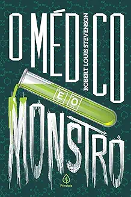
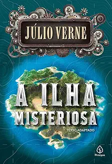
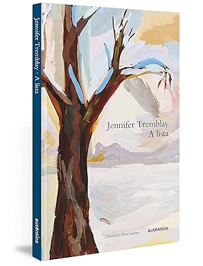

💏Indicações de livro de romances
Para todos os garotos que ja amei
Lara Jean guarda suas cartas de amor em uma caixa azul-petróleo que ganhou da mãe. Não são cartas que ela
recebeu de alguém, mas que ela mesma escreveu. Uma para cada garoto que amou — cinco ao todo. São cartas
sinceras, sem joguinhos nem fingimentos, repletas de coisas que Lara Jean não diria a ninguém, confissões de
seus sentimentos mais profundos. Até que um dia essas cartas secretas são misteriosamente enviadas aos
destinatários, e de uma hora para outra a vida amorosa de Lara Jean sai do papel e se transforma em algo que
ela
não pode mais controlar.
-
Tartarugas até lá embaixo
A história acompanha a jornada de Aza Holmes, uma menina de 16 anos que sai em busca de um bilionário
misteriosamente desaparecido – quem encontrá-lo receberá uma polpuda recompensa em dinheiro – enquanto tenta
lidar com o próprio transtorno obsessivo-compulsivo (TOC).
Hipotese do amor
Olive Smith, doutoranda em Biologia em Stanford, acredita apenas na ciência, não no amor. Para ajudar a amiga
a ficar com Jeremy, ela finge estar em um relacionamento e, no impulso, beija Adam Carlsen, um renomado e
temido professor. Surpreendentemente, ele aceita levar adiante a farsa, e o que começou como um experimento
para enganar os outros acaba aproximando os dois de sentimentos inesperados.
👻Indicações de livro de terror
Entre assassinatos
Nesta coleção de 14 histórias passadas na pequena cidade indiana de Kittur — no período que vai do assassinato
de Indira Gandhi, em 1984, ao de seu filho Rajiv, em 1991 —, Aravind Adiga, o consagrado autor do best-seller
O Tigre Branco e vencedor do Man Booker Prize, apresenta ao leitor os paradoxos da Índia contemporânea. Os
episódios narrados pouco a pouco se interligam e transportam o leitor para aquele tempo e espaço, como um
turista que vai descortinando as entranhas da cidade e descobrindo a natureza de seus habitantes.
O médico e o monstro

Gabriel John Utterson é um advogado que investiga um caso estranho envolvendo Henry Jekyll e Edward Hyde,
repentino beneficiário do testamento de Henry. O advogado descobre acontecimentos que resultam na reclusão
repentina de Jekyll. O romance que envolve ficção científica, transtornos psicológicos e terror é um grande
clássico do gênero.
A cirurgiã
Cirurgiã renomada, esposa dedicada e... assassina? Anne Wiley levava uma vida perfeita: carreira consolidada,
casa confortável e um marido atencioso. Mas tudo desmorona quando, pela primeira vez, perde um paciente —
alguém que ela odiava. O caso levanta suspeitas de assassinato, e a promotora Paula Fuselier inicia uma
investigação implacável. No entanto, ambas compartilham um segredo: o envolvimento com Derreck, marido de Anne
e candidato a prefeito. Um suspense psicológico intenso, onde qualquer escândalo pode destruir vidas.
👽Indicações de livro de ficção científica
A ilha misteriosa

Depois de sequestrar um balão de um campo confederado, um grupo de cinco abolicionistas americanos cai das
nuvens em uma ilha vulcânica desconhecida no oceano Pacífico. Agora, precisam lutar pela própria
sobrevivência. Juntos eles se empenham em construir uma colônia do zero, mas a ilha de recursos abundantes tem
segredos inimagináveis que somente a mente criativa de Júlio Verne é capaz de descrever.
Uma dobra no tempo - livro 1
 Após uma noite de forte tempestade, uma visita estranha chega à casa da família Murry e convoca Meg, seu irmão
Charles Wallace e o amigo deles, Calvin O'Keefe, para uma aventura muito perigosa e extraordinária – uma
viagem que ameaçará suas vidas e o universo.
Tratando de temas como a quinta dimensão e viagem no tempo, unindo-os a elementos fantásticos, alienígenas e
aventuras de tirar o fôlego, a série Uma dobra no tempo é uma leitura fascinante para todas as idades.
Após uma noite de forte tempestade, uma visita estranha chega à casa da família Murry e convoca Meg, seu irmão
Charles Wallace e o amigo deles, Calvin O'Keefe, para uma aventura muito perigosa e extraordinária – uma
viagem que ameaçará suas vidas e o universo.
Tratando de temas como a quinta dimensão e viagem no tempo, unindo-os a elementos fantásticos, alienígenas e
aventuras de tirar o fôlego, a série Uma dobra no tempo é uma leitura fascinante para todas as idades.
Viagem ao centro da terra
O professor Lidenbrock consegue decifrar um enigma do pergaminho de um cientista do século XII e se junta ao
seu sobrinho, o jovem Áxel, para checar a possibilidade de chegar ao centro da Terra seguindo o relato
decifrado.
😱Indicações de livro de suspense
A garota do lago
Summit Lake é uma pequena e tranquila cidade cercada por montanhas e águas intocadas.
Nesse cenário bucólico, a estudante de direito Becca Eckersley foi brutalmente assassinada em uma casa à beira
do lago.
Filha de um influente advogado, Becca parecia viver seu melhor momento quando teve a vida interrompida.
A repórter Kelsey Castle decide investigar o caso e mergulha nos segredos da jovem.
Ao conhecer as amizades, romances e mistérios de Becca, ela sente uma ligação inesperada com a vítima.
A busca pela verdade se mistura às próprias dores de Kelsey, revelando conexões profundas entre ambas.
Jantar secreto
Um grupo de jovens do interior do Paraná se muda para o Rio de Janeiro em busca de sucesso.
Em Copacabana, dividem um apartamento enquanto tentam pagar a faculdade e sobreviver.
Com o dinheiro curto e o aluguel atrasado, criam jantares secretos para a elite carioca.
A estratégia logo os arrasta para um perigoso submundo de crimes.
Eles descobrem redes de contrabando de corpos, matadouros clandestinos e clientes excêntricos.
Presos a essa espiral sombria, revelam facetas perversas que nunca imaginaram possuir.
A paciente silenciosa
Alicia Berenson, pintora renomada, vivia um casamento perfeito com Gabriel até cometer um crime chocante.
Em uma noite, ela disparou cinco vezes contra o marido e desde então nunca mais falou.
Seu silêncio transformou o caso em um mistério que fascina o público e valoriza sua arte.
Internada no Grove, um hospital psiquiátrico, torna-se objeto de estudos e especulações.
Theo Faber, psicoterapeuta forense, acredita ser capaz de fazê-la revelar a verdade.
Sua investigação, porém, expõe segredos obscuros que mudam tudo no desfecho surpreendente.
😞Indicações de livro de drama
Alista

Um item. Outro item. E outros tantos mais. É desse modo, falando entre infindáveis listas do cotidiano, que a
escritora Jennifer Tremblay conta a história de uma mulher residente em uma região campestre, provavelmente
canadense, com o marido e os três filhos. Ela é vizinha de Caroline, morta há pouco. Enquanto esta era uma mãe
devotada aos quatros filhos e ao amor que lhe proporcionam, aquela vivia atormentada pela autoimposição de
colocar o mundo dentro de intermináveis listas. Na sanha de eliminar os afazeres de suas listagens, um deles
foi constantemente negligenciado.
A garota dinamarquesa
Numa tarde fria, enquanto pintam no ateliê, a esposa pede ao marido que vista temporariamente as roupas da
modelo.
Esse gesto simples inicia uma das histórias de amor mais incomuns do século XX.
Inspirado na vida do pintor dinamarquês Einar Wegener e sua esposa, o livro explora mudanças de identidade e
desejos.
Einar assume cada vez mais seu alter ego feminino, Lili, despertando sentimentos inesperados em Greta.
Ambientado na Europa dos anos 1920, o romance mostra amor, sacrifício e descoberta da verdadeira sexualidade.
Desculpe o exagero, mas não sei sentir pouco
No amor, não há espaço para o raso. Ele não existe na superfície ou mesmo na escassez. Amor é para quem tem
coragem de se atirar na intensidade e se esbaldar na abundância. Então, nem perca tempo em ficar onde seus pés
alcançam. É no profundo que ele acontece.